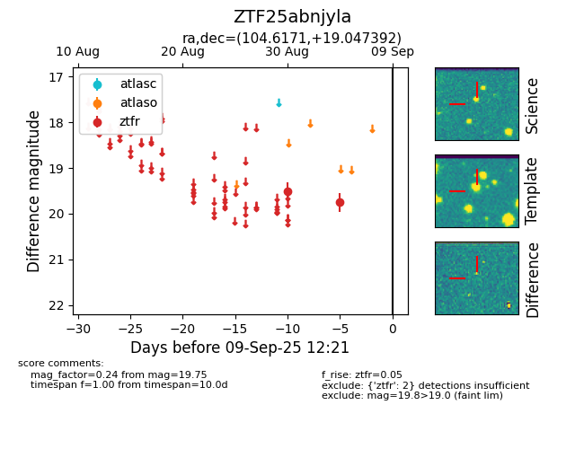

FINK: ZTF25abnjyla
Lasair: ZTF25abnjyla
ALeRCE: ZTF25abnjyla
ZTF25abnjyla (ztf,fink)
equatorial (ra, dec) = (104.6171,+19.04739)
galactic (l, b) = (196.5790,+10.05612)

last ztfr=19.75
2 ztfr detections